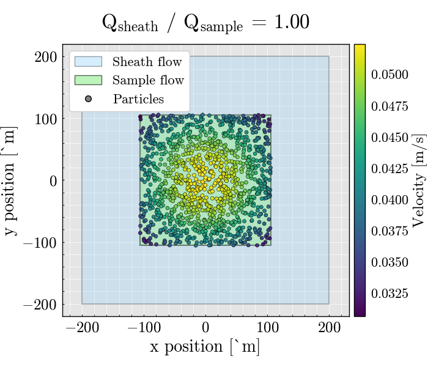

Note
Go to the end to download the full example code.
Visualize particle sampling in a rectangular flow cell#
This example shows how to simulate particle trajectories in a rectangular flow cell and visualize their transverse positions.
The figure highlights three pieces of information:
the full channel cross section, shown as the sheath region
the focused sample core, shown as the sample region
the simulated particle positions, colored by their local axial velocity
This is a convenient way to inspect how hydrodynamic focusing shapes the particle distribution before optical interrogation.
import matplotlib.pyplot as plt
from matplotlib.lines import Line2D
from matplotlib.patches import Patch
from mpl_toolkits.axes_grid1 import make_axes_locatable
from FlowCyPy.units import ureg
from FlowCyPy.fluidics import (
Fluidics,
FlowCell,
ScattererCollection,
SampleFlowRate,
SheathFlowRate,
populations,
distributions,
)
Plot configuration#
Define all figure style parameters in one place so the example is easy to customize.
TITLE_FONT_SIZE = 24
LABEL_FONT_SIZE = 20
TICK_FONT_SIZE = 18
LEGEND_FONT_SIZE = 16
COLORBAR_LABEL_FONT_SIZE = 18
COLORBAR_TICK_FONT_SIZE = 16
SCATTER_SIZE = 18
Helper function#
This small helper draws a rectangular region centered at the origin and returns its boundaries in micrometers.
def add_region_to_ax(ax, region, **kwargs):
width = region.width.to("micrometer").magnitude
height = region.height.to("micrometer").magnitude
left = -width / 2.0
right = +width / 2.0
top = +height / 2.0
bottom = -height / 2.0
patch = plt.Rectangle(
(left, bottom),
width,
height,
**kwargs,
)
ax.add_patch(patch)
return left, right, top, bottom
Define the flow cell#
The flow cell geometry and the sample and sheath flow rates determine the size of the focused sample core.
flow_cell = FlowCell(
sample_volume_flow=SampleFlowRate.HIGH.value,
sheath_volume_flow=SampleFlowRate.HIGH.value * 1,
width=400 * ureg.micrometer,
height=400 * ureg.micrometer,
)
Define the particle population#
Here we construct a single spherical population with user-defined distributions for particle diameter and refractive index.
scatterer_collection = ScattererCollection()
medium_refractive_index = distributions.Delta(1.33)
diameter_dist = distributions.RosinRammler(
scale=200 * ureg.nanometer,
shape=10,
)
ri_dist = distributions.Normal(
mean=1.44,
standard_deviation=0.002,
low_cutoff=1.33,
)
sampling_method = populations.ExplicitModel()
population_0 = populations.SpherePopulation(
name="Pop 0",
medium_refractive_index=medium_refractive_index,
concentration=1e10 * ureg.particle / ureg.milliliter,
diameter=diameter_dist,
refractive_index=ri_dist,
sampling_method=sampling_method,
)
scatterer_collection.add_population(population_0)
# Dilute the initial collection to reduce the number of sampled particles.
scatterer_collection.dilute(factor=80)
Generate particle events#
The Fluidics object uses the flow cell and the scatterer collection to generate particle events over the requested run time.
fluidics = Fluidics(
scatterer_collection=scatterer_collection,
flow_cell=flow_cell,
)
event_collection = fluidics.generate_event_collection(
run_time=5 * ureg.millisecond,
sampling_rate=10 * ureg.megahertz,
)
df = event_collection[0].to_dataframe()
Plot the transverse particle distribution#
The outer rectangle represents the full channel cross section. The inner rectangle represents the focused sample core. Particle positions are colored by their local velocity.
figure, ax = plt.subplots(1, 1, figsize=(7, 6))
left, right, top, bottom = add_region_to_ax(
ax=ax,
region=flow_cell.sheath,
facecolor="lightskyblue",
alpha=0.25,
edgecolor="black",
linewidth=1.5,
)
sample_left, sample_right, sample_top, sample_bottom = add_region_to_ax(
ax=ax,
region=flow_cell.sample,
facecolor="lightgreen",
alpha=0.45,
edgecolor="black",
linewidth=1.5,
)
scatter_plot = ax.scatter(
df.x.to("micrometer").magnitude,
df.y.to("micrometer").magnitude,
c=df.Velocity.to("meter/second").magnitude,
s=SCATTER_SIZE,
alpha=1.0,
edgecolors="black",
linewidths=0.4,
zorder=3,
)
sheath_to_sample_ratio = (
flow_cell.sheath.volume_flow / flow_cell.sample.volume_flow
).magnitude
x_margin = 0.08 * (right - left)
ax.set(
xlim=[left - x_margin, right + x_margin],
ylim=[bottom * 1.1, top * 1.1],
xlabel="x position [µm]",
ylabel="y position [µm]",
)
ax.set_title(
f"Q$_{{sheath}}$ / Q$_{{sample}}$ = {sheath_to_sample_ratio:.2f}",
fontsize=TITLE_FONT_SIZE,
pad=18,
)
ax.set_aspect("equal")
ax.grid(alpha=1.0)
ax.xaxis.label.set_size(LABEL_FONT_SIZE)
ax.yaxis.label.set_size(LABEL_FONT_SIZE)
ax.tick_params(axis="both", labelsize=TICK_FONT_SIZE)
divider = make_axes_locatable(ax)
colorbar_ax = divider.append_axes("right", size="4%", pad=0.08)
colorbar = figure.colorbar(scatter_plot, cax=colorbar_ax)
colorbar.set_label("Velocity [m/s]", fontsize=COLORBAR_LABEL_FONT_SIZE)
colorbar.ax.tick_params(labelsize=COLORBAR_TICK_FONT_SIZE)
legend_handles = [
Patch(
facecolor="lightskyblue",
edgecolor="black",
alpha=0.35,
label="Sheath flow",
),
Patch(
facecolor="lightgreen",
edgecolor="black",
alpha=0.60,
label="Sample flow",
),
Line2D(
[0],
[0],
marker="o",
linestyle="None",
markerfacecolor="gray",
markeredgecolor="black",
markersize=7,
alpha=1.0,
label="Particles",
),
]
ax.legend(
handles=legend_handles,
loc="upper left",
fontsize=LEGEND_FONT_SIZE,
framealpha=1.0,
)
plt.tight_layout()
plt.show()

Total running time of the script: (0 minutes 1.978 seconds)